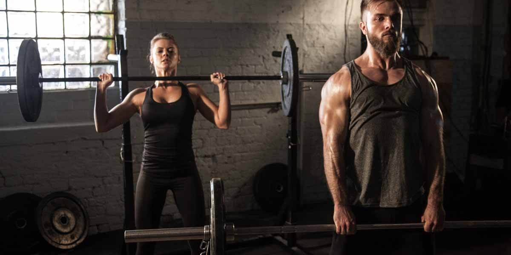

Praticar exercícios físicos traz grandes benefícios para a saúde. Te ajuda a ter uma vida mais saudável, regrada e garante mais disposição para encarar uma rotina cheia e atarefada. A regularidade nos exercícios é uma prática recomendada pela Organização Mundial da Saúde. Com a intensidade e com a variedade nos exercícios, a chance de ficar doente é menor e gradativamente a chance de viver mais aumenta. Praticar exercícios na academia é algo muito vantajoso, além da estrutura, você tem acompanhamento de um profissional, se integra do ambiente motivador e faz amizades com pessoas com o mesmo intuito que você.
Para o treino com peso livre, geralmente a pessoa precisa trocar a quantidade de kg, o que exige uma escolha acertada de quanto conseguirá aguentar até o fim do treino. Em repetições de três que algumas vezes precisam ser feitas até 12 vezes, o peso em excesso pode se tornar um inimigo. Por isso, ao utilizar esse tipo de equipamento é necessária uma maior atenção.
A musculação melhora o condicionamento cardiorrespiratório, diminui a quantidade de gordura, auxilia o emagrecimento, diminui o risco de diabetes, aumenta a autonomia em idosos e garante mais disposição física.
